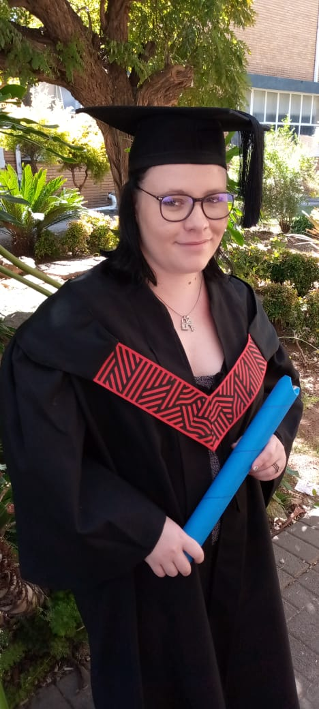

Resume of Chané Greeff

Summary
As a graphic designer, and a web developer, I aspire to be the greatest version of me that I can be. I tend to give my all and I do my absolute best to ensure that I make sure that my work reaches its full potential.
Education
Vaalpark articon
2020
Matriculated
Vaal University of Technology
2021-2023
Diploma in Graphic designer
Work Experience
SETS - Specialized Equipment and Technology Solutions
Jan-Jul 2021
Marketing administrator
Employer - Ravi Lachman
Job Responsibilities included:
- Updating website
- Marketing
- Updating brochures, creating flyers and posters for marketing
Sign Creations
November 2023 - Present
Production Assistant
Employer - Louis Louw
Job Responsibilities included:
- Vehicle Branding
- Vinyl Cutting and Applicating
- Digital Printing and Application with materials such as:
- 3 year digital print with lamination
- Chromadeck boards
- ABS
- Correx
- Wooden canvas
- Vehicle Magnets
- Resin Doming
- Graphic Design
Skills
Graphic Design Skills
- CorelDraw
- Adobe Illustrator
- Adobe Photoshop
- Adobe InDesign
Other Skills
- 3D Printing
- HTML, CSS and JavaScript coding
- Signage Poduction
- Vinyl cutting and application
- Digital Printing
- Vehicle Branding
- Photography
- Computer literate with Microsoft, such as:
- Microsoft Word
- Microsoft Excel
- Microsoft Powerpoint
See more about me
Contact me